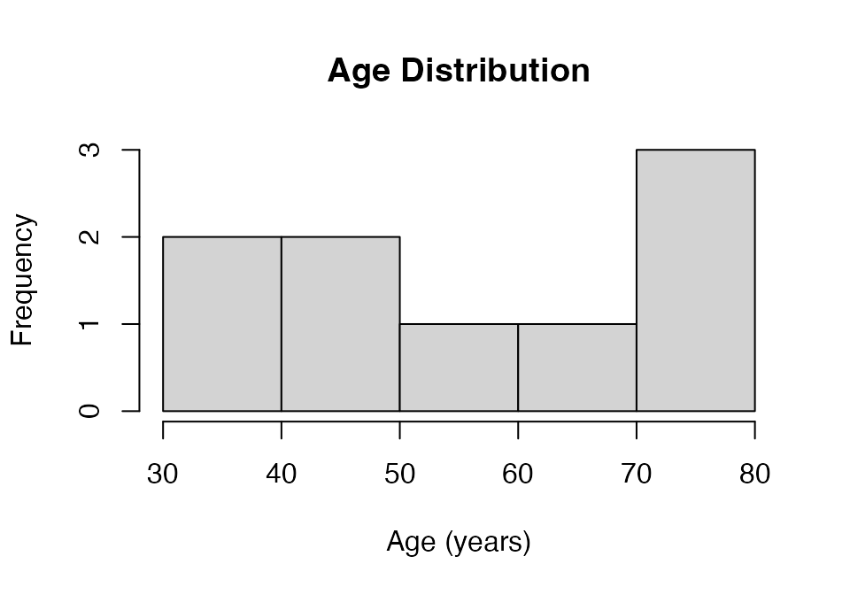

Example ADAT Workflow Using SomaScan.db
Source:vignettes/example_adat_workflow.Rmd
example_adat_workflow.RmdIntroduction
This vignette will illustrate how the SomaScan.db
package can be used to extend the results of basic bioinformatic
analyses performed on SomaScan data. In this vignette, we will use tools
from SomaDataIO,
in conjunction with SomaScan.db, to identify and annotate
proteins (and ultimately, genes and their biological pathways) that are
associated with a clinical variable of interest;
e.g. Age.
This workflow assumes the user has a basic knowledge of the R programming language. In addition, it is assumed that the user is familiar with the ADAT format, as well as the documentation in SomaDataIO and the SomaLogic-Data Github repository. For more information about the ADAT format, as well as a detailed description of the fields found in an ADAT, please reference the SomaLogic-Data repository README.
library(dplyr)
library(GO.db)
library(SomaDataIO)
library(SomaScan.db)Reading an ADAT
The ADAT file format is a SomaLogic-specific, tab-delimited text file
designed to store SomaScan study data. The example ADAT file used for
this walkthrough, example_data10.adat, contains a SomaScan
5k study from a set of 10 human samples. The measurements and
identifiers have been altered to protect personally identifiable
information (PII), while retaining the underlying biological signal as
much as possible.
To begin, we will utilize SomaDataIO::read_adat() to
load the example ADAT file:
# Retrieve the example ADAT file from the SomaDataIO package
file <- system.file("extdata", "example_data10.adat",
package = "SomaDataIO", mustWork = TRUE
)
# Read in the file
adat <- SomaDataIO::read_adat(file)
adat## ══ SomaScan Data ═════════════════════════════════════════════════════════
## SomaScan version V4 (5k)
## Signal Space 5k
## Attributes intact ✓
## Rows 10
## Columns 5318
## Clinical Data 34
## Features 5284
## ── Column Meta ───────────────────────────────────────────────────────────
## ℹ SeqId, SeqIdVersion, SomaId, TargetFullName, Target, UniProt,
## ℹ EntrezGeneID, EntrezGeneSymbol, Organism, Units, Type,
## ℹ Dilution, PlateScale_Reference, CalReference,
## ℹ Cal_Example_Adat_Set001, ColCheck,
## ℹ CalQcRatio_Example_Adat_Set001_170255, QcReference_170255,
## ℹ Cal_Example_Adat_Set002, CalQcRatio_Example_Adat_Set002_170255,
## ℹ Dilution2
## ── Tibble ────────────────────────────────────────────────────────────────
## # A tibble: 10 × 5,319
## row_names PlateId PlateRunDate ScannerID PlatePosition SlideId Subarray
## <chr> <chr> <chr> <chr> <chr> <dbl> <dbl>
## 1 25849580… Exampl… 2020-06-18 SG152144… H9 2.58e11 3
## 2 25849580… Exampl… 2020-06-18 SG152144… H8 2.58e11 7
## 3 25849580… Exampl… 2020-06-18 SG152144… H7 2.58e11 8
## 4 25849580… Exampl… 2020-06-18 SG152144… H6 2.58e11 4
## 5 25849580… Exampl… 2020-06-18 SG152144… H5 2.58e11 4
## 6 25849580… Exampl… 2020-06-18 SG152144… H4 2.58e11 8
## 7 25849580… Exampl… 2020-06-18 SG152144… H3 2.58e11 3
## 8 25849580… Exampl… 2020-06-18 SG152144… H2 2.58e11 8
## 9 25849580… Exampl… 2020-06-18 SG152144… H12 2.58e11 8
## 10 25849580… Exampl… 2020-06-18 SG152144… H11 2.58e11 3
## # ℹ 5,312 more variables: SampleId <chr>, SampleType <chr>,
## # PercentDilution <int>, SampleMatrix <chr>, Barcode <lgl>,
## # Barcode2d <chr>, SampleName <lgl>, SampleNotes <lgl>,
## # AliquotingNotes <lgl>, SampleDescription <chr>, …
## ══════════════════════════════════════════════════════════════════════════Data Prep and Exploration
Next, we will perform some preliminary data exploration of our
variable of interest (Age):
summary(adat$Age)## Min. 1st Qu. Median Mean 3rd Qu. Max. NA's
## 36.00 41.00 55.00 55.78 71.00 77.00 1
hist(adat$Age,
xlab = "Age (years)",
main = "Age Distribution"
)
The subjects in this example data set are all adults, with age ranging from 36 to 77 years.
However, as suggested by the summary table above, there is 1 patient that is missing age information:
## ══ SomaScan Data ═════════════════════════════════════════════════════════
## SomaScan version V4 (5k)
## Signal Space 5k
## Attributes intact ✓
## Rows 1
## Columns 2
## Clinical Data 2
## Features 0
## ── Column Meta ───────────────────────────────────────────────────────────
## ℹ SeqId, SeqIdVersion, SomaId, TargetFullName, Target, UniProt,
## ℹ EntrezGeneID, EntrezGeneSymbol, Organism, Units, Type,
## ℹ Dilution, PlateScale_Reference, CalReference,
## ℹ Cal_Example_Adat_Set001, ColCheck,
## ℹ CalQcRatio_Example_Adat_Set001_170255, QcReference_170255,
## ℹ Cal_Example_Adat_Set002, CalQcRatio_Example_Adat_Set002_170255,
## ℹ Dilution2
## ── Tibble ────────────────────────────────────────────────────────────────
## # A tibble: 1 × 3
## row_names SlideId Age
## <chr> <dbl> <int>
## 1 258495800004_3 258495800004 NA
## ══════════════════════════════════════════════════════════════════════════Note: You may notice that the select
function above has the namespace (dplyr)
specified; this is to distinguish between dplyr::select()
and SomaScan.db::select(), both of which will be used in
this vignette. A more thorough explanation of why this is important can
be found in the “select namespace collision” section.
Samples corresponding to this patient will need to be removed before proceeding:
As a quick sanity check: this ADAT was generated using the 5k SomaScan assay menu, which indicates that there should be RFU values for approximately 5,000 analytes.
analytes <- SomaDataIO::getAnalytes(adat)
head(analytes)## [1] "seq.10000.28" "seq.10001.7" "seq.10003.15" "seq.10006.25"
## [5] "seq.10008.43" "seq.10011.65"
length(analytes)## [1] 5284Indeed, there are 5284 analytes in this example ADAT file, consistent with the assay version.
Note on SeqId format
The values obtained in analytes above contains the same
information as a SomaLogic SeqId, just converted to a more
R-friendly format (i.e. the seq-prefix and "."
delimiters). This format of identifier is used throughout
SomaDataIO, and is also compatible with
SomaScan.db. Values obtained from SomaDataIO
(with the seq-prefix) are converted to SeqIds
automatically when used by methods in SomaScan.db.
Identifying Associations
We can now examine the data to see if any analytes are correlated
with the variable Age. First, however, the data be be
pre-processed. SomaLogic generally recommends to log-transform the RFU
values in an ADAT prior to analysis.
log10_adat <- log10(adat)After log-transformation, we can examine the correlations and
identify analytes that are positively correlated with Age.
Here, correlations will be calculated using
stats::cor.test():
# Calculate correlations for each analyte
cors_df <- lapply(analytes, function(x) {
results <- stats::cor.test(log10_adat$Age, log10_adat[[x]],
method = "spearman", exact = FALSE)
results <- results[c("estimate", "p.value")]
unlist(results)
}) %>% setNames(analytes)
# Bind results together into a single dataframe
cors_df <- dplyr::bind_rows(cors_df, .id = "analytes")
# Isolate top positive correlations
top_posCor <- cors_df %>%
dplyr::filter(p.value < 0.05) %>% # Retain significant cors only
dplyr::filter(estimate.rho >= 0.75) %>% # Retain strong correlations
arrange(desc(estimate.rho))
nrow(top_posCor)## [1] 98
head(top_posCor, 20L)## # A tibble: 20 × 3
## analytes estimate.rho p.value
## <chr> <dbl> <dbl>
## 1 seq.7655.11 0.95 0.0000876
## 2 seq.9942.2 0.95 0.0000876
## 3 seq.15326.64 0.933 0.000236
## 4 seq.6444.15 0.933 0.000236
## 5 seq.3362.61 0.917 0.000507
## 6 seq.12988.49 0.9 0.000943
## 7 seq.15640.54 0.9 0.000943
## 8 seq.16890.37 0.9 0.000943
## 9 seq.9266.1 0.9 0.000943
## 10 seq.16785.45 0.883 0.00159
## 11 seq.3336.50 0.883 0.00159
## 12 seq.4666.199 0.883 0.00159
## 13 seq.8304.50 0.883 0.00159
## 14 seq.2944.66 0.867 0.00250
## 15 seq.3434.34 0.867 0.00250
## 16 seq.3435.53 0.867 0.00250
## 17 seq.3440.7 0.867 0.00250
## 18 seq.4131.72 0.867 0.00250
## 19 seq.4907.56 0.867 0.00250
## 20 seq.4914.10 0.867 0.00250The table above contains analytes that have a strong positive
correlation with Age, but this information alone may not
enough to derive meaningful biological insights. Which proteins and
genes do these identifiers correspond to? Are the most correlated
proteins functionally related in some way, perhaps as part of the same
biological pathway? These are the types of questions that
SomaScan.db is designed to address.
In the next section, we will annotate these data by querying the
above SeqIds in SomaScan.db to retrieve
additional information about their corresponding genes and gene
types.
Annotating Results
To obtain a list of available annotations, use the
columns method:
columns(SomaScan.db)## [1] "ACCNUM" "ALIAS" "ENSEMBL" "ENSEMBLPROT"
## [5] "ENSEMBLTRANS" "ENTREZID" "ENZYME" "EVIDENCE"
## [9] "EVIDENCEALL" "GENENAME" "GENETYPE" "GO"
## [13] "GOALL" "IPI" "MAP" "OMIM"
## [17] "ONTOLOGY" "ONTOLOGYALL" "PATH" "PFAM"
## [21] "PMID" "PROBEID" "PROSITE" "REFSEQ"
## [25] "SYMBOL" "UCSCKG" "UNIPROT"Note that the “PROBEID” column corresponds to the SomaScan
SeqId, the central probe for the platform. This identifier
ties the other available annotations (listed in the columns
output above) to the data found in an ADAT file. For more information on
the ADAT file format and an explanation of its contents, please
reference the SomaLogic-Data GitHub
repository.
For this example, we will retrieve Gene Ontology (GO) identifiers
associated with the SeqIds that are positively correlated
with Age. This will be the first step in identifying
biological processes associated with the protein targets of these
SeqIds.
## [1] "GO" "GOALL" "ONTOLOGY" "ONTOLOGYALL"The GO and GOALL columns both contain GO
pathway identifiers, whileONTOLOGY and ONTOLOGYALL contain additional
metadata about the identifiers. For additional information about the
values returned by columns, run
help("{COLUMN NAME}") to get a more detailed description of
the listed options.
Retrieving Annotations
The select method can be used to query the annotations
to retrieve information corresponding to SomaScan analytes of interest.
But, before we proceed, a note about the select method.
select Namespace Collisions
The select method is unique to Bioconductor’s annotation
packages (of which SomaScan.db is one), and should not be
confused with the similarly-named dplyr::select(). These
two functions perform very different actions on different classes of
objects. If you have the dplyr package
(dplyr) loaded at the same
time as SomaScan.db (as we do in this vignette), you may
encounter an error like the one below when using
select:
Error in UseMethod("select") :
no applicable method for 'select' applied to an object of class "c('SomaDb',
'ChipDb', 'AnnotationDb', 'envRefClass', '.environment', 'refClass',
'environment', 'refObject', 'AssayData')"This error indicates that it is unclear which select you
are attempting to use (the dplyr version or the
SomaScan.db version). To remedy this, it can be helpful to
use the :: operator to specify the package namespace when
calling select, as seen in the code chunk below.
Gene Name Annotation
Continuing on with the example, we will retrieve gene names (as
symbols) that correspond to the top 10 analytes associated with
Age.
top10_analytes <- head(top_posCor$analytes, 10L)
anno <- SomaScan.db::select(SomaScan.db,
keys = top10_analytes,
columns = c("SYMBOL", "GENENAME", "GENETYPE"))## 'select()' returned 1:1 mapping between keys and columns
anno## PROBEID SYMBOL GENENAME
## 1 7655-11 NPPB natriuretic peptide B
## 2 9942-2 NXT1 nuclear transport factor 2 like export factor 1
## 3 15326-64 GBP1 guanylate binding protein 1
## 4 6444-15 PSG3 pregnancy specific beta-1-glycoprotein 3
## 5 3362-61 CHRDL1 chordin like 1
## 6 12988-49 EWSR1 EWS RNA binding protein 1
## 7 15640-54 TAGLN transgelin
## 8 16890-37 ADAMTSL1 ADAMTS like 1
## 9 9266-1 TREM1 triggering receptor expressed on myeloid cells 1
## 10 16785-45 DEFA5 defensin alpha 5
## GENETYPE
## 1 protein-coding
## 2 protein-coding
## 3 protein-coding
## 4 protein-coding
## 5 protein-coding
## 6 protein-coding
## 7 protein-coding
## 8 protein-coding
## 9 protein-coding
## 10 protein-codingRemember that select retains the order of the original
query, so these genes are still listed in order of most highly
associated with Age.
GO Annotation
Which pathways or biological processes are these genes associated
with? Could that information help explain why they positively correlated
with age? SomaScan.db enables mapping between
SeqIds and GO identifiers, so let’s take the top 3 genes
and add GO annotations to the data frame. But why only 3 genes? We are
likely to receive a lot of additional information if we query the
database for GO identifiers, so it can be easier and cleaner to begin
with a small example data set when retrieving additional
annotations.
go_anno <- SomaScan.db::select(SomaScan.db,
keys = anno$PROBEID[1:3L],
columns = c("SYMBOL", "GENENAME", "GENETYPE",
"GO", "ONTOLOGY")) %>%
dplyr::filter(ONTOLOGY == "BP")## 'select()' returned 1:many mapping between keys and columns
go_anno## PROBEID SYMBOL GENENAME
## 1 7655-11 NPPB natriuretic peptide B
## 2 7655-11 NPPB natriuretic peptide B
## 3 7655-11 NPPB natriuretic peptide B
## 4 7655-11 NPPB natriuretic peptide B
## 5 7655-11 NPPB natriuretic peptide B
## 6 7655-11 NPPB natriuretic peptide B
## 7 7655-11 NPPB natriuretic peptide B
## 8 7655-11 NPPB natriuretic peptide B
## 9 7655-11 NPPB natriuretic peptide B
## 10 7655-11 NPPB natriuretic peptide B
## 11 7655-11 NPPB natriuretic peptide B
## 12 7655-11 NPPB natriuretic peptide B
## 13 7655-11 NPPB natriuretic peptide B
## 14 7655-11 NPPB natriuretic peptide B
## 15 7655-11 NPPB natriuretic peptide B
## 16 7655-11 NPPB natriuretic peptide B
## 17 7655-11 NPPB natriuretic peptide B
## 18 7655-11 NPPB natriuretic peptide B
## 19 7655-11 NPPB natriuretic peptide B
## 20 9942-2 NXT1 nuclear transport factor 2 like export factor 1
## 21 9942-2 NXT1 nuclear transport factor 2 like export factor 1
## 22 9942-2 NXT1 nuclear transport factor 2 like export factor 1
## 23 9942-2 NXT1 nuclear transport factor 2 like export factor 1
## 24 15326-64 GBP1 guanylate binding protein 1
## 25 15326-64 GBP1 guanylate binding protein 1
## 26 15326-64 GBP1 guanylate binding protein 1
## 27 15326-64 GBP1 guanylate binding protein 1
## 28 15326-64 GBP1 guanylate binding protein 1
## 29 15326-64 GBP1 guanylate binding protein 1
## 30 15326-64 GBP1 guanylate binding protein 1
## 31 15326-64 GBP1 guanylate binding protein 1
## 32 15326-64 GBP1 guanylate binding protein 1
## 33 15326-64 GBP1 guanylate binding protein 1
## 34 15326-64 GBP1 guanylate binding protein 1
## 35 15326-64 GBP1 guanylate binding protein 1
## 36 15326-64 GBP1 guanylate binding protein 1
## 37 15326-64 GBP1 guanylate binding protein 1
## 38 15326-64 GBP1 guanylate binding protein 1
## 39 15326-64 GBP1 guanylate binding protein 1
## 40 15326-64 GBP1 guanylate binding protein 1
## 41 15326-64 GBP1 guanylate binding protein 1
## 42 15326-64 GBP1 guanylate binding protein 1
## GENETYPE GO EVIDENCE ONTOLOGY
## 1 protein-coding GO:0003085 IBA BP
## 2 protein-coding GO:0003161 NAS BP
## 3 protein-coding GO:0006182 IBA BP
## 4 protein-coding GO:0006182 IDA BP
## 5 protein-coding GO:0006457 IDA BP
## 6 protein-coding GO:0007166 NAS BP
## 7 protein-coding GO:0007168 IBA BP
## 8 protein-coding GO:0007168 IDA BP
## 9 protein-coding GO:0007218 IBA BP
## 10 protein-coding GO:0007589 TAS BP
## 11 protein-coding GO:0008217 NAS BP
## 12 protein-coding GO:0016525 TAS BP
## 13 protein-coding GO:0019934 IBA BP
## 14 protein-coding GO:0030308 NAS BP
## 15 protein-coding GO:0035810 TAS BP
## 16 protein-coding GO:0035815 TAS BP
## 17 protein-coding GO:0042311 IEA BP
## 18 protein-coding GO:0043114 TAS BP
## 19 protein-coding GO:0097746 NAS BP
## 20 protein-coding GO:0006406 IDA BP
## 21 protein-coding GO:0006406 ISS BP
## 22 protein-coding GO:0006611 IEA BP
## 23 protein-coding GO:0016973 IBA BP
## 24 protein-coding GO:0032703 IMP BP
## 25 protein-coding GO:0042742 ISS BP
## 26 protein-coding GO:0042832 IDA BP
## 27 protein-coding GO:0045087 IDA BP
## 28 protein-coding GO:0050848 IMP BP
## 29 protein-coding GO:0050860 IMP BP
## 30 protein-coding GO:0051607 IEA BP
## 31 protein-coding GO:0051715 IDA BP
## 32 protein-coding GO:0070373 IMP BP
## 33 protein-coding GO:0071346 IBA BP
## 34 protein-coding GO:0071346 IDA BP
## 35 protein-coding GO:0071347 IEP BP
## 36 protein-coding GO:0071356 IEP BP
## 37 protein-coding GO:0072665 IDA BP
## 38 protein-coding GO:0140639 IDA BP
## 39 protein-coding GO:0160075 IDA BP
## 40 protein-coding GO:1900025 IMP BP
## 41 protein-coding GO:1903076 IGI BP
## 42 protein-coding GO:1903077 IMP BPAs expected when working with GO terms, there were quite a few rows
retrieved by that select query (42 rows of information for
only 3 genes). Filtering the results to the biological process (“BP”)
ontology only can help reduce the number of GO identifiers that are
returned in the query.
This leaves us with a list of GO identifiers, but those identifiers do not adequately explain much about the term itself. How can we get more “human-readable” information out of GO?
Luckily, this is easy to do with other annotation tools from
Bioconductor. The GO.db
annotation package contains annotations describing the
entire Gene Ontology knowledgebase, assembled using data directly from
the GO website. We can use the GO
IDs identified by SomaScan.db to connect with GO.db and
retrieve more information about each GO ID.
go_terms <- AnnotationDbi::select(GO.db,
keys = go_anno$GO,
columns = c("GOID", "TERM", "DEFINITION"))## 'select()' returned many:1 mapping between keys and columns
go_terms## GOID
## 1 GO:0003085
## 2 GO:0003161
## 3 GO:0006182
## 4 GO:0006182
## 5 GO:0006457
## 6 GO:0007166
## 7 GO:0007168
## 8 GO:0007168
## 9 GO:0007218
## 10 GO:0007589
## 11 GO:0008217
## 12 GO:0016525
## 13 GO:0019934
## 14 GO:0030308
## 15 GO:0035810
## 16 GO:0035815
## 17 GO:0042311
## 18 GO:0043114
## 19 GO:0097746
## 20 GO:0006406
## 21 GO:0006406
## 22 GO:0006611
## 23 GO:0016973
## 24 GO:0032703
## 25 GO:0042742
## 26 GO:0042832
## 27 GO:0045087
## 28 GO:0050848
## 29 GO:0050860
## 30 GO:0051607
## 31 GO:0051715
## 32 GO:0070373
## 33 GO:0071346
## 34 GO:0071346
## 35 GO:0071347
## 36 GO:0071356
## 37 GO:0072665
## 38 GO:0140639
## 39 GO:0160075
## 40 GO:1900025
## 41 GO:1903076
## 42 GO:1903077
## TERM
## 1 negative regulation of systemic arterial blood pressure
## 2 cardiac conduction system development
## 3 cGMP biosynthetic process
## 4 cGMP biosynthetic process
## 5 protein folding
## 6 cell surface receptor signaling pathway
## 7 receptor guanylyl cyclase signaling pathway
## 8 receptor guanylyl cyclase signaling pathway
## 9 neuropeptide signaling pathway
## 10 body fluid secretion
## 11 regulation of blood pressure
## 12 negative regulation of angiogenesis
## 13 cGMP-mediated signaling
## 14 negative regulation of cell growth
## 15 positive regulation of urine volume
## 16 positive regulation of renal sodium excretion
## 17 vasodilation
## 18 regulation of vascular permeability
## 19 blood vessel diameter maintenance
## 20 mRNA export from nucleus
## 21 mRNA export from nucleus
## 22 protein export from nucleus
## 23 poly(A)+ mRNA export from nucleus
## 24 negative regulation of interleukin-2 production
## 25 defense response to bacterium
## 26 defense response to protozoan
## 27 innate immune response
## 28 regulation of calcium-mediated signaling
## 29 negative regulation of T cell receptor signaling pathway
## 30 defense response to virus
## 31 cytolysis in another organism
## 32 negative regulation of ERK1 and ERK2 cascade
## 33 cellular response to type II interferon
## 34 cellular response to type II interferon
## 35 cellular response to interleukin-1
## 36 cellular response to tumor necrosis factor
## 37 protein localization to vacuole
## 38 positive regulation of pyroptosis
## 39 non-canonical inflammasome complex assembly
## 40 negative regulation of substrate adhesion-dependent cell spreading
## 41 regulation of protein localization to plasma membrane
## 42 negative regulation of protein localization to plasma membrane
## DEFINITION
## 1 The process that reduces the force with which blood travels through the systemic arterial circulatory system.
## 2 The process whose specific outcome is the progression of the cardiac conduction system over time, from its formation to the mature structure. The cardiac conduction system consists of specialized cardiomyocytes that regulate the frequency of heart beat.
## 3 The chemical reactions and pathways resulting in the formation of cyclic GMP, guanosine 3',5'-phosphate.
## 4 The chemical reactions and pathways resulting in the formation of cyclic GMP, guanosine 3',5'-phosphate.
## 5 The process of assisting in the covalent and noncovalent assembly of single chain polypeptides or multisubunit complexes into the correct tertiary structure.
## 6 The series of molecular signals initiated by activation of a receptor on the surface of a cell. The pathway begins with binding of an extracellular ligand to a cell surface receptor, or for receptors that signal in the absence of a ligand, by ligand-withdrawal or the activity of a constitutively active receptor. The pathway ends with regulation of a downstream cellular process, e.g. transcription.
## 7 The series of molecular signals initiated by an extracellular ligand binding to a receptor on the surface of the target cell where the receptor possesses guanylyl cyclase activity, and ending with the regulation of a downstream cellular process, e.g. transcription.
## 8 The series of molecular signals initiated by an extracellular ligand binding to a receptor on the surface of the target cell where the receptor possesses guanylyl cyclase activity, and ending with the regulation of a downstream cellular process, e.g. transcription.
## 9 A G protein-coupled receptor signaling pathway initiated by a neuropeptide binding to its receptor on the surface of a target cell, and ending with the regulation of a downstream cellular process.
## 10 The controlled release of a fluid by a cell or tissue in an animal.
## 11 Any process that modulates the force with which blood travels through the circulatory system. The process is controlled by a balance of processes that increase pressure and decrease pressure.
## 12 Any process that stops, prevents, or reduces the frequency, rate or extent of angiogenesis.
## 13 Any intracellular signal transduction in which the signal is passed on within the cell via cyclic GMP (cGMP). Includes production of cGMP, and downstream effectors that further transmit the signal within the cell.
## 14 Any process that stops, prevents, or reduces the frequency, rate, extent or direction of cell growth.
## 15 Any process that increases the amount of urine excreted from the body over a unit of time.
## 16 Any process that increases the amount of sodium excreted in urine over a unit of time.
## 17 An increase in the internal diameter of blood vessels, especially arterioles or capillaries, due to relaxation of smooth muscle cells that line the vessels, and usually resulting in a decrease in blood pressure.
## 18 Any process that modulates the extent to which blood vessels can be pervaded by fluid.
## 19 Any process that modulates the diameter of blood vessels.
## 20 The directed movement of mRNA from the nucleus to the cytoplasm.
## 21 The directed movement of mRNA from the nucleus to the cytoplasm.
## 22 The directed movement of a protein from the nucleus into the cytoplasm.
## 23 The directed movement of poly(A)+ mRNA out of the nucleus into the cytoplasm.
## 24 Any process that stops, prevents, or reduces the frequency, rate, or extent of interleukin-2 production.
## 25 Reactions triggered in response to the presence of a bacterium that act to protect the cell or organism.
## 26 Reactions triggered in response to the presence of a protozoan that act to protect the cell or organism.
## 27 Innate immune responses are defense responses mediated by germline encoded components that directly recognize components of potential pathogens.
## 28 Any process that modulates the frequency, rate or extent of calcium-mediated signaling, the process in which a cell uses calcium ions to convert an extracellular signal into a response.
## 29 Any process that stops, prevents, or reduces the frequency, rate or extent of signaling pathways initiated by the cross-linking of an antigen receptor on a T cell.
## 30 Reactions triggered in response to the presence of a virus that act to protect the cell or organism.
## 31 The killing by an organism of a cell in another organism by means of the rupture of cell membranes and the loss of cytoplasm.
## 32 Any process that stops, prevents, or reduces the frequency, rate or extent of signal transduction mediated by the ERK1 and ERK2 cascade.
## 33 Any process that results in a change in state or activity of a cell (in terms of movement, secretion, enzyme production, gene expression, etc.) as a result of an interferon-gamma stimulus. Interferon gamma is the only member of the type II interferon found so far.
## 34 Any process that results in a change in state or activity of a cell (in terms of movement, secretion, enzyme production, gene expression, etc.) as a result of an interferon-gamma stimulus. Interferon gamma is the only member of the type II interferon found so far.
## 35 Any process that results in a change in state or activity of a cell (in terms of movement, secretion, enzyme production, gene expression, etc.) as a result of an interleukin-1 stimulus.
## 36 Any process that results in a change in state or activity of a cell (in terms of movement, secretion, enzyme production, gene expression, etc.) as a result of a tumor necrosis factor stimulus.
## 37 A process in which a protein is transported to, or maintained at, a location in a vacuole.
## 38 <NA>
## 39 <NA>
## 40 <NA>
## 41 <NA>
## 42 <NA>Now we have much more information about each GO ID! Using
these IDs, we can merge this information back into our
select results from SomaScan.db:
## Warning in left_join(go_anno, go_terms, by = c(GO = "GOID")): Detected an unexpected many-to-many relationship between `x` and `y`.
## ℹ Row 3 of `x` matches multiple rows in `y`.
## ℹ Row 3 of `y` matches multiple rows in `x`.
## ℹ If a many-to-many relationship is expected, set `relationship =
## "many-to-many"` to silence this warning.
final_df## PROBEID SYMBOL GENENAME
## 1 7655-11 NPPB natriuretic peptide B
## 2 7655-11 NPPB natriuretic peptide B
## 3 7655-11 NPPB natriuretic peptide B
## 4 7655-11 NPPB natriuretic peptide B
## 5 7655-11 NPPB natriuretic peptide B
## 6 7655-11 NPPB natriuretic peptide B
## 7 7655-11 NPPB natriuretic peptide B
## 8 7655-11 NPPB natriuretic peptide B
## 9 7655-11 NPPB natriuretic peptide B
## 10 7655-11 NPPB natriuretic peptide B
## 11 7655-11 NPPB natriuretic peptide B
## 12 7655-11 NPPB natriuretic peptide B
## 13 7655-11 NPPB natriuretic peptide B
## 14 7655-11 NPPB natriuretic peptide B
## 15 7655-11 NPPB natriuretic peptide B
## 16 7655-11 NPPB natriuretic peptide B
## 17 7655-11 NPPB natriuretic peptide B
## 18 7655-11 NPPB natriuretic peptide B
## 19 7655-11 NPPB natriuretic peptide B
## 20 7655-11 NPPB natriuretic peptide B
## 21 7655-11 NPPB natriuretic peptide B
## 22 7655-11 NPPB natriuretic peptide B
## 23 7655-11 NPPB natriuretic peptide B
## 24 9942-2 NXT1 nuclear transport factor 2 like export factor 1
## 25 9942-2 NXT1 nuclear transport factor 2 like export factor 1
## 26 9942-2 NXT1 nuclear transport factor 2 like export factor 1
## 27 9942-2 NXT1 nuclear transport factor 2 like export factor 1
## 28 9942-2 NXT1 nuclear transport factor 2 like export factor 1
## 29 9942-2 NXT1 nuclear transport factor 2 like export factor 1
## 30 15326-64 GBP1 guanylate binding protein 1
## 31 15326-64 GBP1 guanylate binding protein 1
## 32 15326-64 GBP1 guanylate binding protein 1
## 33 15326-64 GBP1 guanylate binding protein 1
## 34 15326-64 GBP1 guanylate binding protein 1
## 35 15326-64 GBP1 guanylate binding protein 1
## 36 15326-64 GBP1 guanylate binding protein 1
## 37 15326-64 GBP1 guanylate binding protein 1
## 38 15326-64 GBP1 guanylate binding protein 1
## 39 15326-64 GBP1 guanylate binding protein 1
## 40 15326-64 GBP1 guanylate binding protein 1
## 41 15326-64 GBP1 guanylate binding protein 1
## 42 15326-64 GBP1 guanylate binding protein 1
## 43 15326-64 GBP1 guanylate binding protein 1
## 44 15326-64 GBP1 guanylate binding protein 1
## 45 15326-64 GBP1 guanylate binding protein 1
## 46 15326-64 GBP1 guanylate binding protein 1
## 47 15326-64 GBP1 guanylate binding protein 1
## 48 15326-64 GBP1 guanylate binding protein 1
## 49 15326-64 GBP1 guanylate binding protein 1
## 50 15326-64 GBP1 guanylate binding protein 1
## GENETYPE GO EVIDENCE ONTOLOGY
## 1 protein-coding GO:0003085 IBA BP
## 2 protein-coding GO:0003161 NAS BP
## 3 protein-coding GO:0006182 IBA BP
## 4 protein-coding GO:0006182 IBA BP
## 5 protein-coding GO:0006182 IDA BP
## 6 protein-coding GO:0006182 IDA BP
## 7 protein-coding GO:0006457 IDA BP
## 8 protein-coding GO:0007166 NAS BP
## 9 protein-coding GO:0007168 IBA BP
## 10 protein-coding GO:0007168 IBA BP
## 11 protein-coding GO:0007168 IDA BP
## 12 protein-coding GO:0007168 IDA BP
## 13 protein-coding GO:0007218 IBA BP
## 14 protein-coding GO:0007589 TAS BP
## 15 protein-coding GO:0008217 NAS BP
## 16 protein-coding GO:0016525 TAS BP
## 17 protein-coding GO:0019934 IBA BP
## 18 protein-coding GO:0030308 NAS BP
## 19 protein-coding GO:0035810 TAS BP
## 20 protein-coding GO:0035815 TAS BP
## 21 protein-coding GO:0042311 IEA BP
## 22 protein-coding GO:0043114 TAS BP
## 23 protein-coding GO:0097746 NAS BP
## 24 protein-coding GO:0006406 IDA BP
## 25 protein-coding GO:0006406 IDA BP
## 26 protein-coding GO:0006406 ISS BP
## 27 protein-coding GO:0006406 ISS BP
## 28 protein-coding GO:0006611 IEA BP
## 29 protein-coding GO:0016973 IBA BP
## 30 protein-coding GO:0032703 IMP BP
## 31 protein-coding GO:0042742 ISS BP
## 32 protein-coding GO:0042832 IDA BP
## 33 protein-coding GO:0045087 IDA BP
## 34 protein-coding GO:0050848 IMP BP
## 35 protein-coding GO:0050860 IMP BP
## 36 protein-coding GO:0051607 IEA BP
## 37 protein-coding GO:0051715 IDA BP
## 38 protein-coding GO:0070373 IMP BP
## 39 protein-coding GO:0071346 IBA BP
## 40 protein-coding GO:0071346 IBA BP
## 41 protein-coding GO:0071346 IDA BP
## 42 protein-coding GO:0071346 IDA BP
## 43 protein-coding GO:0071347 IEP BP
## 44 protein-coding GO:0071356 IEP BP
## 45 protein-coding GO:0072665 IDA BP
## 46 protein-coding GO:0140639 IDA BP
## 47 protein-coding GO:0160075 IDA BP
## 48 protein-coding GO:1900025 IMP BP
## 49 protein-coding GO:1903076 IGI BP
## 50 protein-coding GO:1903077 IMP BP
## TERM
## 1 negative regulation of systemic arterial blood pressure
## 2 cardiac conduction system development
## 3 cGMP biosynthetic process
## 4 cGMP biosynthetic process
## 5 cGMP biosynthetic process
## 6 cGMP biosynthetic process
## 7 protein folding
## 8 cell surface receptor signaling pathway
## 9 receptor guanylyl cyclase signaling pathway
## 10 receptor guanylyl cyclase signaling pathway
## 11 receptor guanylyl cyclase signaling pathway
## 12 receptor guanylyl cyclase signaling pathway
## 13 neuropeptide signaling pathway
## 14 body fluid secretion
## 15 regulation of blood pressure
## 16 negative regulation of angiogenesis
## 17 cGMP-mediated signaling
## 18 negative regulation of cell growth
## 19 positive regulation of urine volume
## 20 positive regulation of renal sodium excretion
## 21 vasodilation
## 22 regulation of vascular permeability
## 23 blood vessel diameter maintenance
## 24 mRNA export from nucleus
## 25 mRNA export from nucleus
## 26 mRNA export from nucleus
## 27 mRNA export from nucleus
## 28 protein export from nucleus
## 29 poly(A)+ mRNA export from nucleus
## 30 negative regulation of interleukin-2 production
## 31 defense response to bacterium
## 32 defense response to protozoan
## 33 innate immune response
## 34 regulation of calcium-mediated signaling
## 35 negative regulation of T cell receptor signaling pathway
## 36 defense response to virus
## 37 cytolysis in another organism
## 38 negative regulation of ERK1 and ERK2 cascade
## 39 cellular response to type II interferon
## 40 cellular response to type II interferon
## 41 cellular response to type II interferon
## 42 cellular response to type II interferon
## 43 cellular response to interleukin-1
## 44 cellular response to tumor necrosis factor
## 45 protein localization to vacuole
## 46 positive regulation of pyroptosis
## 47 non-canonical inflammasome complex assembly
## 48 negative regulation of substrate adhesion-dependent cell spreading
## 49 regulation of protein localization to plasma membrane
## 50 negative regulation of protein localization to plasma membrane
## DEFINITION
## 1 The process that reduces the force with which blood travels through the systemic arterial circulatory system.
## 2 The process whose specific outcome is the progression of the cardiac conduction system over time, from its formation to the mature structure. The cardiac conduction system consists of specialized cardiomyocytes that regulate the frequency of heart beat.
## 3 The chemical reactions and pathways resulting in the formation of cyclic GMP, guanosine 3',5'-phosphate.
## 4 The chemical reactions and pathways resulting in the formation of cyclic GMP, guanosine 3',5'-phosphate.
## 5 The chemical reactions and pathways resulting in the formation of cyclic GMP, guanosine 3',5'-phosphate.
## 6 The chemical reactions and pathways resulting in the formation of cyclic GMP, guanosine 3',5'-phosphate.
## 7 The process of assisting in the covalent and noncovalent assembly of single chain polypeptides or multisubunit complexes into the correct tertiary structure.
## 8 The series of molecular signals initiated by activation of a receptor on the surface of a cell. The pathway begins with binding of an extracellular ligand to a cell surface receptor, or for receptors that signal in the absence of a ligand, by ligand-withdrawal or the activity of a constitutively active receptor. The pathway ends with regulation of a downstream cellular process, e.g. transcription.
## 9 The series of molecular signals initiated by an extracellular ligand binding to a receptor on the surface of the target cell where the receptor possesses guanylyl cyclase activity, and ending with the regulation of a downstream cellular process, e.g. transcription.
## 10 The series of molecular signals initiated by an extracellular ligand binding to a receptor on the surface of the target cell where the receptor possesses guanylyl cyclase activity, and ending with the regulation of a downstream cellular process, e.g. transcription.
## 11 The series of molecular signals initiated by an extracellular ligand binding to a receptor on the surface of the target cell where the receptor possesses guanylyl cyclase activity, and ending with the regulation of a downstream cellular process, e.g. transcription.
## 12 The series of molecular signals initiated by an extracellular ligand binding to a receptor on the surface of the target cell where the receptor possesses guanylyl cyclase activity, and ending with the regulation of a downstream cellular process, e.g. transcription.
## 13 A G protein-coupled receptor signaling pathway initiated by a neuropeptide binding to its receptor on the surface of a target cell, and ending with the regulation of a downstream cellular process.
## 14 The controlled release of a fluid by a cell or tissue in an animal.
## 15 Any process that modulates the force with which blood travels through the circulatory system. The process is controlled by a balance of processes that increase pressure and decrease pressure.
## 16 Any process that stops, prevents, or reduces the frequency, rate or extent of angiogenesis.
## 17 Any intracellular signal transduction in which the signal is passed on within the cell via cyclic GMP (cGMP). Includes production of cGMP, and downstream effectors that further transmit the signal within the cell.
## 18 Any process that stops, prevents, or reduces the frequency, rate, extent or direction of cell growth.
## 19 Any process that increases the amount of urine excreted from the body over a unit of time.
## 20 Any process that increases the amount of sodium excreted in urine over a unit of time.
## 21 An increase in the internal diameter of blood vessels, especially arterioles or capillaries, due to relaxation of smooth muscle cells that line the vessels, and usually resulting in a decrease in blood pressure.
## 22 Any process that modulates the extent to which blood vessels can be pervaded by fluid.
## 23 Any process that modulates the diameter of blood vessels.
## 24 The directed movement of mRNA from the nucleus to the cytoplasm.
## 25 The directed movement of mRNA from the nucleus to the cytoplasm.
## 26 The directed movement of mRNA from the nucleus to the cytoplasm.
## 27 The directed movement of mRNA from the nucleus to the cytoplasm.
## 28 The directed movement of a protein from the nucleus into the cytoplasm.
## 29 The directed movement of poly(A)+ mRNA out of the nucleus into the cytoplasm.
## 30 Any process that stops, prevents, or reduces the frequency, rate, or extent of interleukin-2 production.
## 31 Reactions triggered in response to the presence of a bacterium that act to protect the cell or organism.
## 32 Reactions triggered in response to the presence of a protozoan that act to protect the cell or organism.
## 33 Innate immune responses are defense responses mediated by germline encoded components that directly recognize components of potential pathogens.
## 34 Any process that modulates the frequency, rate or extent of calcium-mediated signaling, the process in which a cell uses calcium ions to convert an extracellular signal into a response.
## 35 Any process that stops, prevents, or reduces the frequency, rate or extent of signaling pathways initiated by the cross-linking of an antigen receptor on a T cell.
## 36 Reactions triggered in response to the presence of a virus that act to protect the cell or organism.
## 37 The killing by an organism of a cell in another organism by means of the rupture of cell membranes and the loss of cytoplasm.
## 38 Any process that stops, prevents, or reduces the frequency, rate or extent of signal transduction mediated by the ERK1 and ERK2 cascade.
## 39 Any process that results in a change in state or activity of a cell (in terms of movement, secretion, enzyme production, gene expression, etc.) as a result of an interferon-gamma stimulus. Interferon gamma is the only member of the type II interferon found so far.
## 40 Any process that results in a change in state or activity of a cell (in terms of movement, secretion, enzyme production, gene expression, etc.) as a result of an interferon-gamma stimulus. Interferon gamma is the only member of the type II interferon found so far.
## 41 Any process that results in a change in state or activity of a cell (in terms of movement, secretion, enzyme production, gene expression, etc.) as a result of an interferon-gamma stimulus. Interferon gamma is the only member of the type II interferon found so far.
## 42 Any process that results in a change in state or activity of a cell (in terms of movement, secretion, enzyme production, gene expression, etc.) as a result of an interferon-gamma stimulus. Interferon gamma is the only member of the type II interferon found so far.
## 43 Any process that results in a change in state or activity of a cell (in terms of movement, secretion, enzyme production, gene expression, etc.) as a result of an interleukin-1 stimulus.
## 44 Any process that results in a change in state or activity of a cell (in terms of movement, secretion, enzyme production, gene expression, etc.) as a result of a tumor necrosis factor stimulus.
## 45 A process in which a protein is transported to, or maintained at, a location in a vacuole.
## 46 <NA>
## 47 <NA>
## 48 <NA>
## 49 <NA>
## 50 <NA>The SomaScan.db package can be used to link to numerous
other annotation resources. For a more detailed description of how this
can be done with examples of what resources are available, see the
Advanced Usage Examples vignette.
There is still room for further exploration and extension of these
results; this workflow is meant to be an introduction to how
SomaScan.db can be used to build upon and interpret
information obtained from a SomaLogic ADAT.
Session Info
## R version 4.3.3 (2024-02-29)
## Platform: x86_64-apple-darwin20 (64-bit)
## Running under: macOS Monterey 12.7.4
##
## Matrix products: default
## BLAS: /Library/Frameworks/R.framework/Versions/4.3-x86_64/Resources/lib/libRblas.0.dylib
## LAPACK: /Library/Frameworks/R.framework/Versions/4.3-x86_64/Resources/lib/libRlapack.dylib; LAPACK version 3.11.0
##
## locale:
## [1] en_US.UTF-8/en_US.UTF-8/en_US.UTF-8/C/en_US.UTF-8/en_US.UTF-8
##
## time zone: UTC
## tzcode source: internal
##
## attached base packages:
## [1] stats4 stats graphics grDevices utils datasets methods
## [8] base
##
## other attached packages:
## [1] SomaScan.db_0.99.9 SomaDataIO_6.1.0 GO.db_3.18.0
## [4] AnnotationDbi_1.64.1 IRanges_2.36.0 S4Vectors_0.40.2
## [7] Biobase_2.62.0 BiocGenerics_0.48.1 dplyr_1.1.4
## [10] BiocStyle_2.30.0
##
## loaded via a namespace (and not attached):
## [1] KEGGREST_1.42.0 xfun_0.43
## [3] bslib_0.7.0 vctrs_0.6.5
## [5] tools_4.3.3 bitops_1.0-7
## [7] generics_0.1.3 tibble_3.2.1
## [9] fansi_1.0.6 RSQLite_2.3.6
## [11] highr_0.10 blob_1.2.4
## [13] pkgconfig_2.0.3 desc_1.4.3
## [15] readxl_1.4.3 lifecycle_1.0.4
## [17] GenomeInfoDbData_1.2.11 compiler_4.3.3
## [19] textshaping_0.3.7 Biostrings_2.70.3
## [21] GenomeInfoDb_1.38.8 htmltools_0.5.8.1
## [23] sass_0.4.9 RCurl_1.98-1.14
## [25] yaml_2.3.8 pillar_1.9.0
## [27] pkgdown_2.0.8 crayon_1.5.2
## [29] jquerylib_0.1.4 tidyr_1.3.1
## [31] cachem_1.0.8 org.Hs.eg.db_3.18.0
## [33] tidyselect_1.2.1 digest_0.6.35
## [35] purrr_1.0.2 bookdown_0.38
## [37] fastmap_1.1.1 cli_3.6.2
## [39] magrittr_2.0.3 utf8_1.2.4
## [41] withr_3.0.0 bit64_4.0.5
## [43] rmarkdown_2.26 XVector_0.42.0
## [45] httr_1.4.7 bit_4.0.5
## [47] cellranger_1.1.0 ragg_1.3.0
## [49] png_0.1-8 memoise_2.0.1
## [51] evaluate_0.23 knitr_1.45
## [53] rlang_1.1.3 glue_1.7.0
## [55] DBI_1.2.2 BiocManager_1.30.22
## [57] jsonlite_1.8.8 R6_2.5.1
## [59] systemfonts_1.0.6 fs_1.6.3
## [61] zlibbioc_1.48.2